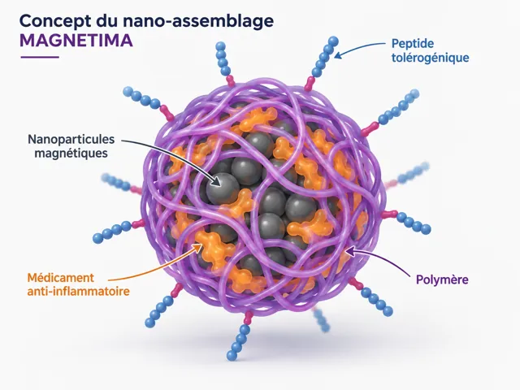

Luminophore and Magnetic Multicore Nanoassemblies for Dual-Mode MRI and Fluorescence Imaging
Lartigue, L.; Coupeau, M.; Lesault, M.
NanoBioMat
Understanding magnetic nanoparticles, controlling their organization and exploring their interactions with living systems.
The NanoBioMat team designs iron oxide nanoparticles and their assemblies. We investigate the mechanisms governing their magnetic behaviour and work with partners to develop approaches for imaging and therapeutic research.

Research directions
How do size and shape influence magnetism?
We prepare nanoparticles with controlled characteristics to understand and tune their properties.
02What changes when particles are organized together?
We study how their arrangement gives rise to collective magnetic behaviour.
03How do these objects interact with living systems?
We investigate their biological fate and explore their functions in nanomedicine.
Published work
Lartigue, L.; Coupeau, M.; Lesault, M.
Lartigue, L.; Alloyeau, D.; Kolosnjaj-Tabi, J.; et al.
Lartigue, L.; Hugounenq, P.; Alloyeau, D.; et al.
Lab life

MAGNETIMA is an ANR-funded research project in magnetic nanomedicine.
Léa Ponroy presented her doctoral research on magnetic and photoactive nanoassemblies at PHOTONANO26 in Paris.